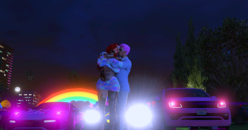
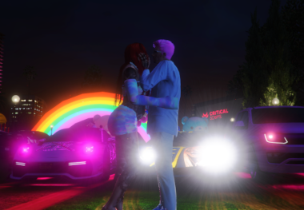
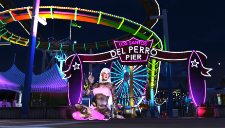

Meu amor, hoje, ao completar um mês de namoro, eu me pego refletindo sobre o quão maravilhoso tem sido esse tempo ao seu lado. Parece que foi ontem que tudo começou, mas, ao mesmo tempo, sinto que já compartilhei com você tantas memórias e momentos incríveis que é difícil acreditar que esse amor nasceu há apenas um mês. O tempo, quando estamos ao lado de quem amamos, passa de uma forma tão única e especial, como se o tempo se esticasse e, ao mesmo tempo, se acelerasse.
Nestes 30 dias, aprendi tanto com você. Cada risada, cada conversa, cada gesto de carinho que você tem me dado me faz perceber ainda mais o quanto somos compatíveis, o quanto conseguimos nos entender sem precisar de palavras e o quanto nossa conexão é verdadeira. Você me ensina todos os dias a ser uma pessoa melhor e mais feliz, e não tenho palavras suficientes para agradecer por isso.
O mais bonito dessa caminhada é que, mesmo em um mês, conseguimos criar um laço tão forte. Em pouco tempo, você se tornou alguém indispensável na minha vida. É você que eu quero ao meu lado para enfrentar os desafios, rir das bobagens e sonhar com o futuro. Sua presença me traz paz, me faz sentir seguro, e eu sei que o que estamos construindo é algo sólido e verdadeiro.
Cada momento que passamos juntos, seja em uma simples caminhada, em uma conversa tranquila ou até em um silêncio confortável, é muito mais do que eu poderia esperar de um relacionamento. A sua companhia é uma das maiores bênçãos que eu já recebi. Sinto que, a cada dia, minha admiração por você cresce, e o que mais me encanta é o fato de que isso é apenas o começo. O primeiro mês de namoro é apenas uma pequena amostra do que podemos construir juntos, e mal posso esperar para ver o que o futuro nos reserva.
Quero que saiba que, com você, eu sou eu mesmo, e essa autenticidade é o que mais me faz sentir grato. Eu sei que podemos crescer juntos, aprender com nossos erros, apoiar um ao outro e viver intensamente todos os momentos. O futuro é incerto, mas, ao seu lado, tudo parece mais claro, mais possível, mais real.
  